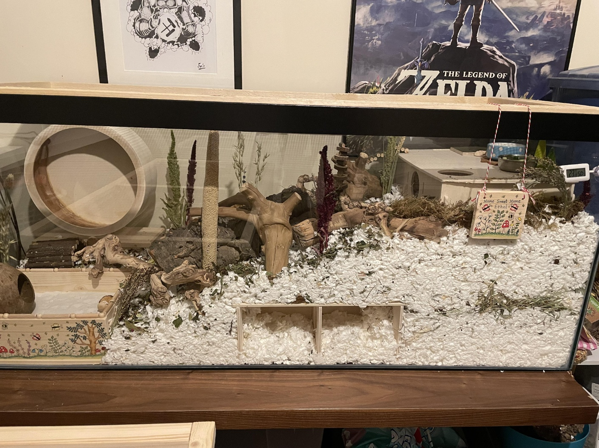
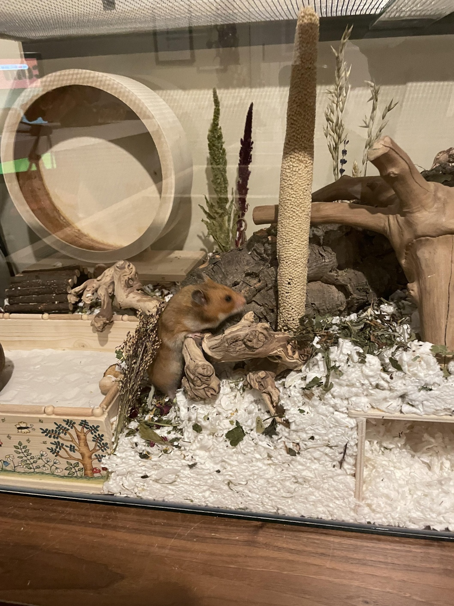
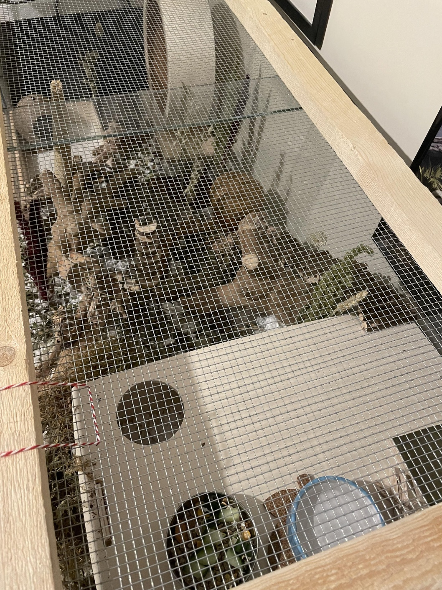

- 햄쥐에대하여.
- 햄키울때중요한거!!>
- 결론>
햄스터를 키울 때 중요한데 잘 모르는거
행스터를 키울 생각을 한거나 이미 키우는 사람들이 잇을것이다. 그런데 문제는 올바른 햄키우기에
대해서 잘 아는자가 별로없다. 필자는 통탄을 금치 못하는 바이다. 햄집에 대해 몇자 적엇다.
햄스터는 2마리이상 합사를 시키지 않는 것이 좋다.
햄스터 사육장은 적어도 100*40*35cm 이상이거나 그 언저리인 것이 좋다.시중에서 파는(놀이공원같이 생긴) 플라스틱 사육장은 너무 좁으며 베딩을 두껍게 깔 충분한 여유가 되지못하고, 주로 세로 방향으로 움직이도록 공간을 조성해 둔 것이 많은데 햄스터들은 고양이처럼 높은 공간을 잘 활용하지 못하므로 쓸모가 없다.
이와 같은 사육장에서 햄스터를 키울 생각인 경우 그냥 키우지 말자. 추천하는 사육장은 커다란 수조, 또는 리빙박스를 개조해서 만든 사육장이다. 크고 넓을수록 햄스터가 스트레스를 덜 받는다.
햄스터들은 굴을 파는 설치류 동물이기 때문에 이들의 건강한 생활을 위해서는 베딩을 충분이 두껍게 깔아주는 것이 매우 중요하다. 이는 많은 사람들이 간과하는 부분인데, 최소 사육장 바닥으로부터 높이 20cm이상으로 깔아주는 것이 이상적이다. 훨씬 더 높아도 상관없다.
쳇바퀴는 필수다. 원 너비가 큰 것일수록 좋다. 너무 작으면 잘 안굴러가기도 하고 햄의 허리에 무리가 간다.
아래는 이상적인 햄스처하우스의 예시사진


